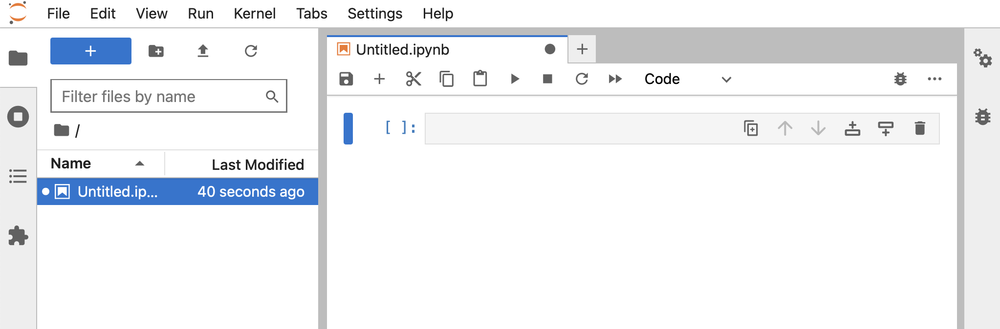

Setting Up Jupyter Lab On Mac
Die Einrichtung von Python auf einem Mac kann knifflig sein. Die Anzahl der Optionen ist groß, und sie können seltsam interagieren. Außerdem müssen Sie sich daran erinnern, welche Installationsmethode Sie verwendet haben, wenn Sie die Version ändern oder ein Upgrade durchführen möchten. Dieser Beitrag soll mich daran erinnern, wie ich es gemacht habe 😉
Installation von Python
Es gibt viele Möglichkeiten, Python auf einem Mac zu installieren und seine Versionen zu verwalten:
- Das auf MacOS installierte Python
brew- Anaconda
pyenv- ...
Was für mich am besten funktioniert hat, ist pyenv:
- Installieren Sie es:
brew install pyenv. Ich gehe davon aus, dass Sie Homebrew installiert haben... - Sehen Sie sich die verfügbaren Optionen und Befehle an:
pyenv - Listen Sie alle Python-Versionen auf, die pyenv zur Verfügung stehen:
pyenv versions - Installieren Sie eine Version:
pyenv install 3.12(Das ist die Python-Version, die ich derzeit verwende) - Setzen Sie die Version, die global verwendet wird:
pyenv global 3.12 - Überprüfen Sie, welche Version global eingestellt ist:
pyenv globaloderpython --version
Arbeitsverzeichnis erstellen
Erstellen Sie das Verzeichnis, in dem Sie im Kontext Ihres Projekts arbeiten möchten. Ich halte alle meine Coding-Projekte unter ~/git. Auf diese Weise weiß ich, dass alle Projekte unter ~/git nicht gesichert werden müssen, da sie in einem Git-Repo sind.
Beispiel:
cd ~/git
mkdir my_python_project
cd my_python_project
Lokale Umgebung erstellen
Um meinem Projekt seine eigene Python-Umgebung bereitzustellen, verwende ich Pythons virtuelle Umgebungen:
cd ~/git/my_python_project
python3.12 -m venv .venv
Auf diese Weise habe ich eine Umgebung im Unterverzeichnis .env erstellt. Um sie zu aktivieren, verwenden Sie source .venv/bin/activate.
Hinweis: Da mein .env-Unterverzeichnis nicht im Git-Repo sein sollte, muss es in der .gitignore-Datei aufgeführt werden.
Jupyter Lab installieren
Jetzt, da ich die Python-Umgebung habe, kann ich Jupyter installieren. Stellen Sie sicher, dass ich im richtigen Verzeichnis bin und die Python-Umgebung aktiviert ist:
# Gehe in mein Projektverzeichnis und aktiviere seine Python-Umgebung
cd ~/git/my_python_project
source .venv/bin/activate
# Installiere Jupyter Lab in dieser Umgebung
pip install jupyterlab
# Sehr oft wird mir empfohlen, pip selbst zu aktualisieren
pip install --upgrade pip
# Starte Jupyter Lab
jupyter lab
# Warten Sie nun ein wenig und Ihr Browser sollte sich auf http://localhost:8888/lab öffnen
Ein neues Notebook erstellen
Ihr Browser sollte in einer frischen Jupyter Lab-Umgebung geöffnet sein:

Klicken Sie auf Notebook > Python 3 und Ihr erstes Notebook sollte bereit sein:

Um in Jupyter Lab loszulegen, folgen Sie deren Benutzerhandbuch.